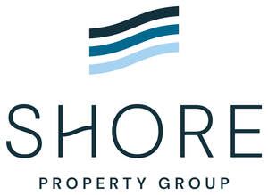

Trade Mark Journal No.2025/025 20 June 2025
UK00004213364 3 June 2025 (35,36,37,42)

- Class 35
- Advertising of commercial or residential real estate; Advertising services relating to the sale of personal property; Advertising services relating to real property.
- Class 36
- Rental of property; Valuation of property; Property valuation; Leasing of property; Property leasing [real estate property only]; Leasing of freehold property; Rental of real estate and property; Management of property; Property management; Valuation of real estate property; Leasing of real estate property; Financial valuation of freehold property; Real estate property management; Property (Real estate -) management; Property (Real estate -) investment; Trusteeship of real estate property; Financial valuation of leasehold property; Mortgaging relating to property and land; Real property management; Property (Real estate -) evaluations; Accommodation bureaux (real estate property); Property (Real estate -) finance; Property investment services; Real estate and property management services; Property (real estate -) appraisal [financial]; Property (Real estate -) brokerage services; Leases (arranging of -) [real estate property only]; Providing real estate information relating to property and land; Arranging leases for the rental of property; Property portfolio management; Agency services for the leasing of real estate property; Financing of property development; Property appraisal services [valuation]; Property (Real estate -) consultancy services; Financial valuation of personal property and real estate; Evaluation of real property; Financial services relating to real estate property and buildings; Property asset management services; Arranging of leases for the rental of commercial property; Commercial property investment services; Loan services for property investment; Administration of property portfolios; Property management services; Appraisal of personal property for others; Estate management services relating to transactions in real property; Financial services relating to real estate property; Provision of information relating to property [real estate]; Real estate services related to management of property investments; Provision of information relating to the property market [real estate]; Real property letting; Valuations and financial appraisals of property; Financial services relating to the sale of property; Financing of property loans; Securing of funds for the purchase of property; Appraisals for insurance claims of personal property; Property investment banking services; Financial services relating to property; Property insurance underwriting; Real property evaluation [financial]; Financial services relating to the acquisition of property; Valuation services of property for fiscal purposes; Domestic property finding services; Rental of real estate; Estate agency services for sale and rental of buildings; Real estate agency services relating to the purchase and sale of land; Agency services for the selling on commission of real property; Real estate management services relating to residential buildings; Real estate agency services for the leasing of land; Real estate agency services for the rental of buildings; Real estate listing services for housing rentals and apartment rentals; Provision of finance for property development; Financing of real estate development projects; Financing services relating to real estate development; Development of investment portfolios; Real estate management services relating to building complexes; Management of commercial properties; Financing of development projects; Real estate management services relating to commercial buildings; Real estate management services relating to industrial premises; Management services for real estate investment; Leasing and rental of commercial premises; Renting of commercial premises; Commercial real estate agency services; Commercial mortgage brokerage; Commercial lending; Real estate agency services relating to the purchase and sale of buildings; Rental of offices [real estate]; Leasing of real estate; Real estate (Leasing of -); Real estate leasing; Management of land; Financing of land acquisition; Land acquisition services; Leasing of land; Land leasing; Land leasing services; Provision of finance for real estate development; Real estate management services relating to housing estates.
- Class 37
- Renovation of property; Construction of property; Maintenance of property; Property maintenance; Property development services [construction]; Advisory services relating to the renovation of property; Construction of residential properties; Building of commercial properties; Development of land [construction]; Building construction supervision services for real estate projects; Construction land developing; Commercial construction; Residential and commercial building construction.
- Class 42
- Architectural services relating to the development of land; Architectural services relating to land development; Development of land (Architectural services relating to the -); Land development (Architectural services relating to -); Design services relating to residential property; Development of construction projects; Quantity surveying; Surveying (Quantity -); Surveying; Land surveying; Surveying of land; Land surveys.
Shore Property Group Ltd